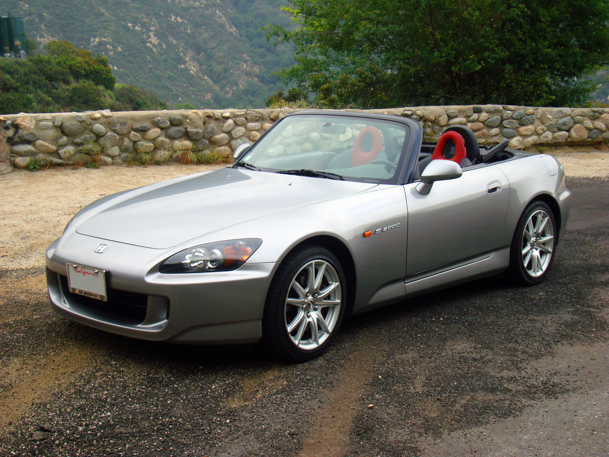

The float Property
In this example, the image will float to the left in the text, and the text in the paragraph will wrap around the image. We will also create a side bar where we can place supplementary information. I will float this element to the right.
Honda S2000
The Honda S2000 is a front-mid engine open top sports car that was manufactured by Japanese automobile manufacturer Honda, from 1999 until 2009. First shown as a concept car called the SSM at the Tokyo Motor Show in 1995, the production version was launched on April 15, 1999, to celebrate the company's 50th anniversary. The S2000 is named for its engine displacement of two litres, while "S" stood for "sports" carrying on in the tradition of the S500, S600, and S800 roadsters of the 1960s..
Several revisions were made throughout the car's production life, including changes to the engine, gearbox, suspension, interior and exterior. Officially two variants exist: the initial launch model was given the chassis code AP1; though cosmetically similar, the facelifted version, known as the AP2 in North America and Japan, incorporated significant changes to the drivetrain and suspension. Production of the S2000 ceased on August 19, 2009.
The Honda S2000 was notable for its exceptional specific power output of about 124 hp per litre, or about two horsepower per cubic inch, the highest of any mass production, naturally aspirated engined car, until 2010.
he S2000 has since become a legitimate modern classic car, having seen a significant appreciation in price for valued examples in good condition. In the JDM community and the car community as a whole, the most sought-after models are special edition productions such as the CR (Club Racer) in the USA market; the standard AP1 and AP2 models have achieved collectible status as well.
The 2004 model S2000 underwent several significant changes. Production moved to Suzuka. The new model introduced 17 in (43 cm) wheels and Bridgestone RE-050 tyres along with a retuned suspension to reduce oversteer. The spring rates and shock absorber damping were altered and the suspension geometry was modified to improve stability by reducing toe-in changes under cornering loads. The subframe also received a revision in design to achieve high rigidity. In the gearbox the brass synchronizers were replaced with carbon fibre. In addition, cosmetic changes were made to the exterior with new front and rear bumpers, revised headlight assemblies, new LED tail-lights, and oval-tipped exhaust pipes. Although all the cosmetic, suspension and most drivetrain upgrades were included on the Japanese, Australian and European models, they retained the 2.0-litre F20C engines and remained designated as AP1 (facelift) models.